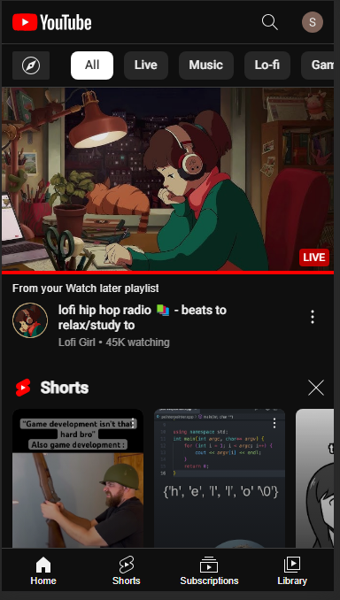
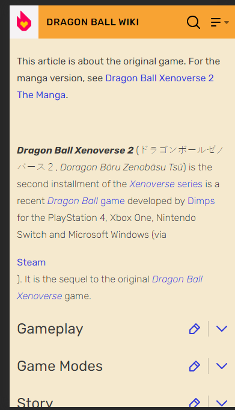
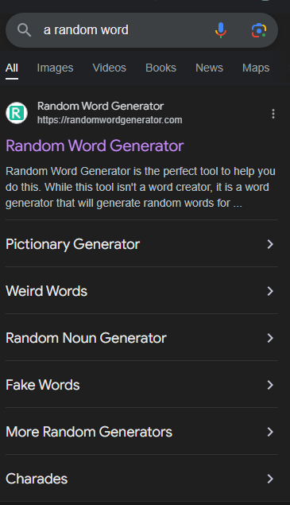

Fitt's Law
 YouTube.comI believe that this is a perfect example of Fitt's law, which is all about mouse movement and distance. Here, the things that most people are going to be clicking on are videos about a topic. In order to maximize user's ability to click, every video has a giant picture above it that is clickable. Due to this, videos feel EXTREMELY easy to click on, and browsing is very much encouraged.
PARC: Repetition
 Fandom.comI believe that the website fandom manages to create a very repetitive experience. Everytime I visit a page (At least the ones I visit on video games), the pages are usually constructed so that there is a table of contents at the top, a quick guide to information on the right side of the page, and below is all of the information. On mobile view, you can minimize these “Information tabs” so that the page isn't overloaded with information we don't need. The fact that most pages on fandom are constructed in this manner gives users the ability to quickly find any information they are looking for by using habits formed from other fandom webpages.
PARC: Contrast
 Google.comI believe that Any google search is likely to have good constrast, at least in dark mode. The reason I say this is because everything here feels good to look at, and everything is extremely readable. In situations when the contrast is too high, you want to advert your eyes. In situations where contrast is too low, you cannot read anything on the page. I think that Dark mode google has struck the perfect balance of being easy to read, while also being comfortable to look at. Also, You can tell what tab we are currently focused on (All, Images, Videos, etc.). Along with this, your brain easily recoginizes the differents sections of this webpage (The search bar at the top has clear borders, the tab selected has clear border). Finally the clickable tabs have harder to see borders. However, these borders are not meant to be the focus of the page, so I believe that it works really well here.